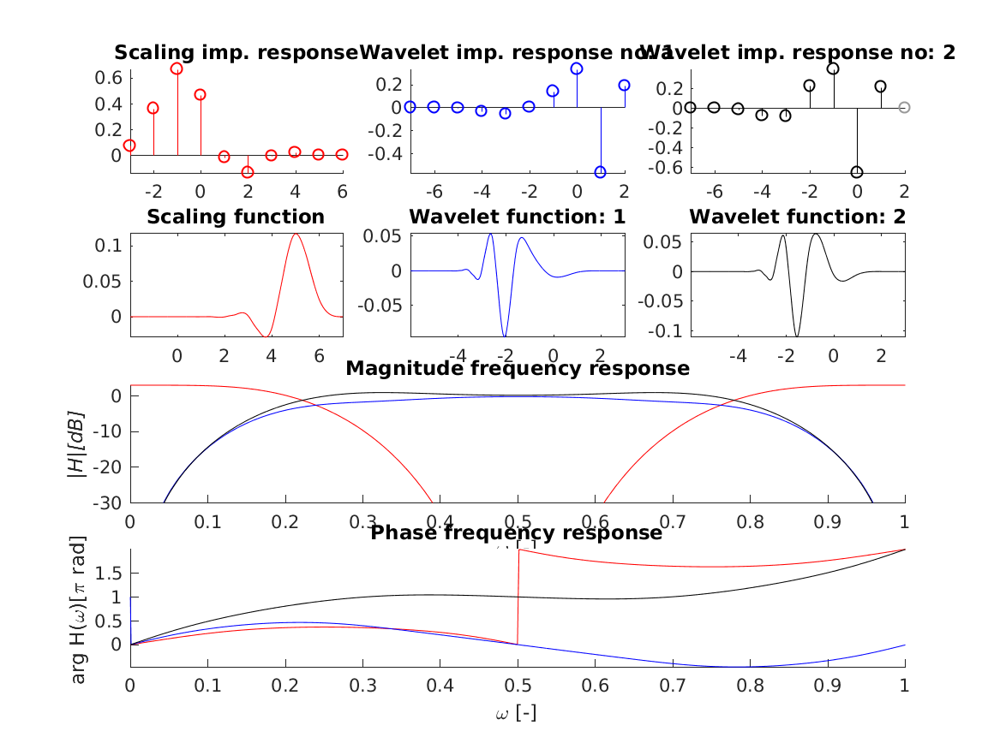

[h,g,a] = wfilt_ddenb(N);
[h,g,a]=wfilt_ddenb(N) with \(N \in {1,2}\) returns filters suitable for dual-tree double density complex wavelet transform tree A.
wfiltinfo('ddena1');
This code produces the following output:
Scaling imp. responsWavelet imp. response Wavelet imp. response no: 2
0.6 +|+F 0.2 +|+ F F | F F
0.4 +|F* F 0 :math:`|`:math:``:math:``:math:``:math:``:math:``:math:``:math:`` 0.2 &|&&&&&&&&&&&&&&
0.2
+ + FF F + + + + + + F + -0.6 +-+ + + F +
Scaling function-| Wavelet function: 1 Wavelet function: 2
0.1 +|++ + +**+-+|0.04 +|+ + *+** + +-+|0.05 +|++ ****+ +-+|
0.08 +|++ + +***-+-0.02 *|*****+*********| 0 *|**************|
0.04 *|---------------0.04 +|----------------0.05 +|--------------|
-0.02 +-++ + ** +-+-0.08 +-+ + * + +-+ -0.1 +-++ ** + +-+
0 2 4 6 -4 -2 0 2 -4 -2 0 2
| Magnitude frequency response
-0 *|********:math:``:math:``:math:``:math:``:math:``:math:``:math:``:math:``:math:``:math:``:math:``:math:``:math:``:math:``:math:``:math:``:math:``:math:``:math:``:math:``
|H|[dB]0 +|------------------------------------------------------------
-25 +-:math:``:math:` + **** **** + `:math:`` +
0 0.2 0.4 0.6 0.8 1
| Phase frequency response
| *************************:math:``:math:``:math:``
1.5 #|+ :math:``:math:``:math:``:math:``:math:``:math:``:math:``:math:``:math:``:math:``:math:``:math:``:math:``:math:``:math:``:math:``:math:``:math:``:math:``:math:``:math:``:math:``
0.5
+ + + ############################+
0 0.2 0.4 0.6 0.8 1

I. Selesnick. The double-density dual-tree DWT. Signal Processing, IEEE Transactions on, 52(5):1304--1314, May 2004. [ DOI ]